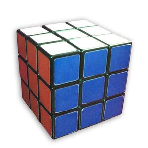
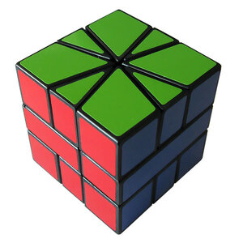
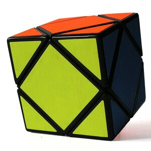

Rubik's Cube
Here is the iconic toy and puzzle of yesteryear, learn more by clicking the image above.
Square-1
The Square-1 is an interesting puzzle that bamboozles many when first they meet. Click the image above to learn more.
Skewb
One of the easier puzzles to solve but don't let that fool you. The Skewb can be a fun little adventure for the tired mind. Click the image above to learn more.
About Me
I got my start in 6th grade with learning to solve the iconic 3x3 puzzle cube, more formally known as the Rubik's Cube. Growing up my oldest brother learned how to solve the puzzle, and from that I was immediately interested in how he did it. Was it magic? Sorcery? Did superman travel from an alternate dimension? Sadly for my overactive imagination it was nothing more than hard work and algorithms. So when I eventually asked him how it was done the response I got was, "here's the instruction booklet, have at it." I'd be lying if this is where I learned how to solve the enigma, for when I looked at that manual I gave up. However years later in 6th grade I met once again with the strange device during a meetup for math club. This time with me being slightly more mature I stuck with the process and found a great new hobby. It is from that love that I found for solving puzzles that I wish to educate those that may have wondered the same as I did many years ago. I won't lie, it takes a bit of memorization and even more persistence, but in the end you will be a master. Or you could just use the algorithms once and never worry about it again.